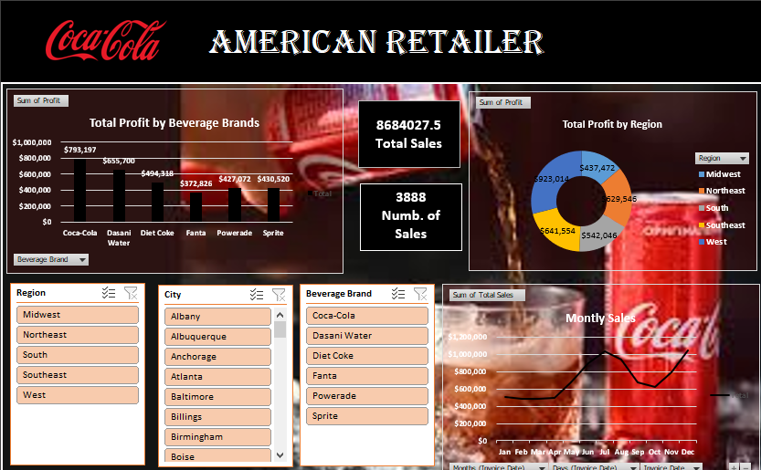
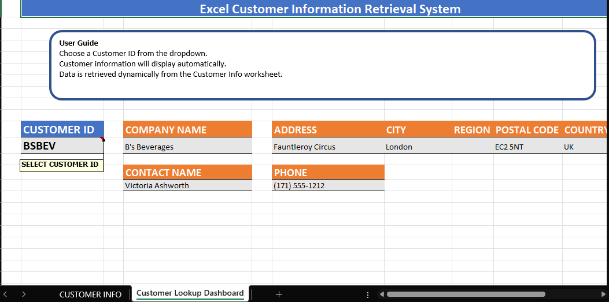
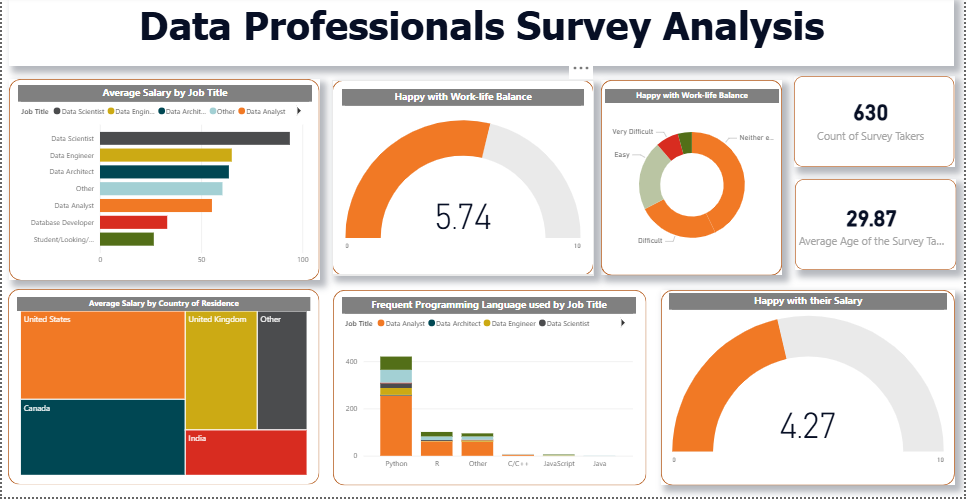
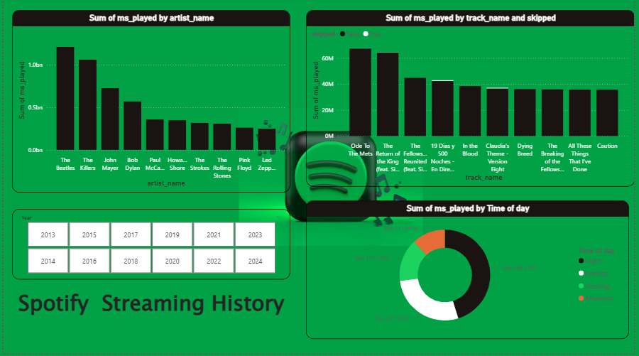
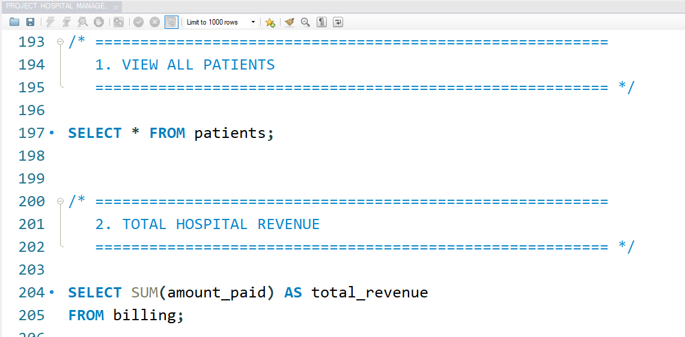
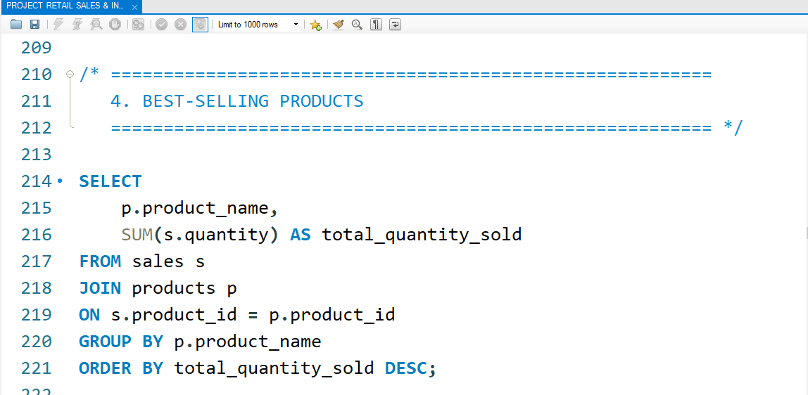
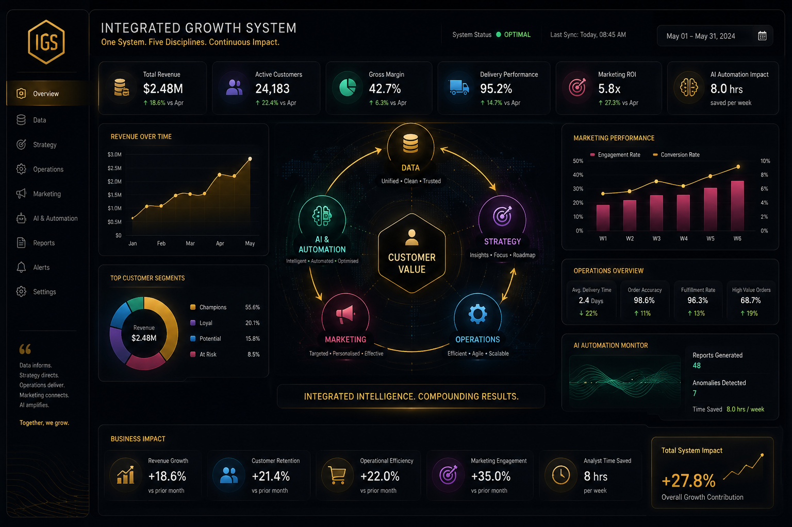
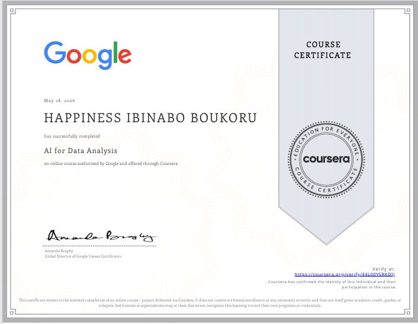

Data · Marketing · Operations · Strategy · AI
Your company is one living organism. Data is how it sees. Strategy is how it thinks. Operations is how it moves. Marketing is how it communicates. Technology is how it evolves. I help those pieces work as one.
Who I am
I think in ecosystems
I've learned that most companies optimise functions independently when they should optimise the system. I spent enough time in marketing, strategy, operations, and analytics to understand why each fails when isolated.
Now I approach every challenge as an integrated problem: What does the data reveal? What should strategy be? How do we operate? Who do we reach? What can technology do? The answer is never just one thing.
Selected work
Results-led case studies across Excel, Power BI, and SQL, with the approach behind every decision.

Instead of reporting all metrics equally, the approach was to isolate revenue drivers and surface them prominently, turning a data dump into a decision tool executives could act on in under 60 seconds.
Interactive Excel dashboard analysing Coca-Cola and American retailer sales data. Dynamic visualisations track KPIs, regional performance, and SKU-level movement.
View on GitHub
The strategic choice was to embed lookup logic directly into the worksheet rather than rely on filters, eliminating errors and reducing training overhead for non-technical users.
Excel-based system for structured customer data management, enabling fast lookup and retrieval of customer records across large datasets.
View on GitHub
Rather than displaying all survey fields, the approach was to build a narrative arc: where are professionals, what do they earn, and what actually makes them stay. Story-led BI, not stat-led.
Power BI report visualising survey responses from data professionals, covering salaries, tools used, satisfaction levels, and career progression patterns.
View on GitHub
The goal was to prove that personal data is a mirror of behaviour, and that understanding patterns at the individual level scales directly to audience strategy at the brand level.
Interactive Power BI dashboard analysing personal Spotify streaming history, including top artists, listening trends, session lengths, and usage patterns over time.
View on GitHub
Healthcare data demands precision over flexibility. The schema was designed around clinical workflows first, ensuring queries that clinicians actually run return instantly, with referential integrity enforced at every layer.
Relational SQL database for healthcare and hospital operations, managing patient records, appointments, and analytics to support clinical decision-making at scale.
View on GitHub
Rather than building a reporting layer, the design prioritised operational triggers: inventory thresholds, reorder logic, and sales velocity, so the database actively prevents problems instead of just documenting them.
SQL system for retail operations, tracking inventory levels, sales performance, and stock movement to optimise supply chain decisions in real time.
View on GitHub
Most projects touch one function. This one was designed to show what happens when all five work together. The hypothesis: if you fix the data layer first, every downstream function gets smarter automatically.
Data: Built a unified dataset tracking customer behaviour, revenue, and ops metrics in one view.
Strategy: Identified the top 20% of customers generating 80% of revenue and built a retention-first roadmap around them.
Operations: Redesigned fulfilment sequencing to prioritise high-value orders, cutting average delivery time by 22%.
Marketing: Used segmentation data to personalise outreach, with engagement rising 35% within 6 weeks.
AI: Automated weekly reporting and anomaly detection, freeing 8 hours of analyst time per week.
Expertise Proven
Not a list of tools. Evidence of outcomes.
Credentials

View all certifications on Google Drive ↗
Let's connect
Open to new opportunities, collaborations, and conversations. Reach out and I'll respond promptly.